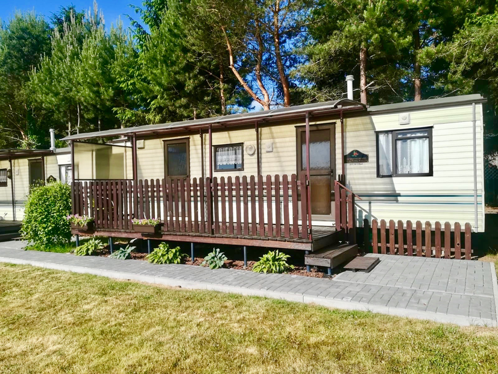
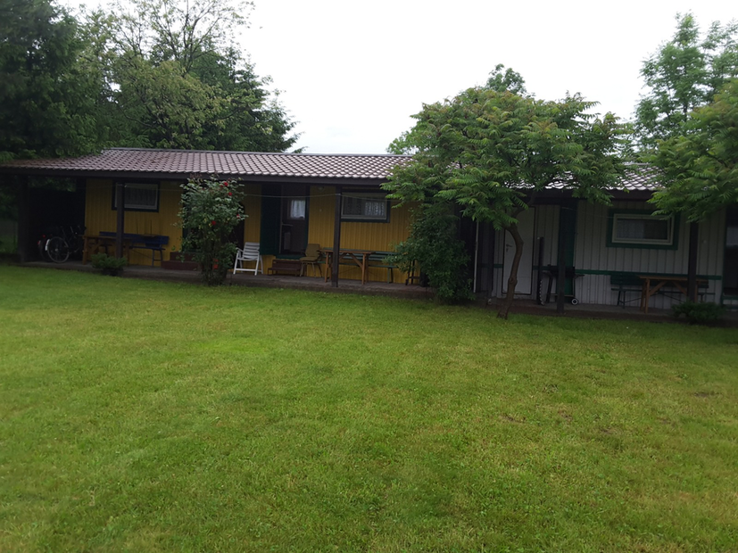

Nasze domki

Domki holenderske

DOMKI HOLENDERSKIE - 4-6 OSOBOWE Domki składają się z:
- salonu (TV, radio, rozkładany narożnik, piecyk gazowy),
- aneksu kuchennego (lodówka, kuchenka, czajnik elektryczny, wyposażenie),
- sypialni (2 os., 1+1 os; w wersji 6 osobowej trzecia sypialnia 1+1),
- łazienki (kabina prysznicowa).
- tarasu z zadaszeniem (zestaw ogrodowy oraz miejsce na grilla)
Pościel dostępna bez dodatkowych opłat. Na wyposażeniu każdego z domków jest także parawan. Do każdego domku przewidziane jest jedno miejsce parkingowe na terenie ośrodka. Dla najmłodszych gości na posesji znajduje się bezpieczny plac zabaw.
Domki kempingowe

DOMKI KEMPINGOWE - MAX 4 OSOBOWE Domki kempingowe składają się z:
- pokoju (2x rozkładana wersalka dwuosobowa, stolik, siedziska, TV)
- kuchni (kuchenka, lodówka, wyposażenie)
- zadaszonego tarasu (zestaw ogrodowy, miejsce na grilla)
Na wyposażeniu jest pościel, standardowe wyposażenie kuchenne oraz parawan. Domki posiadają wspólne łazienki z prysznicem oraz ubikacjami. Do każdego mieszkania przewidziane jest jedno miejsce parkingowe na terenie ośrodka. Dla najmłodszych gości na posesji znajduje się bezpieczny plac zabaw.